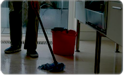

Temizlik yapmak bir insan için zor bir iþ gibi görünebilir, özellikle de buna ayýracak yeterli enerji ve zamaný olmayanlar için. Eðer iþiniz ya da kiþisel sorumluluklarýnýzdan dolayý yoðun bir hayat sürüyorsanýz, ev temizliðinin günlük yapýlacaklar listenizin sonlarýnda yer aldýðýný fark etmiþ olmalýsýnýz. Ancak kirli bir ortamýn vücudunuz kadar zihniniz üzerinde de olumsuz bir etki býrakabileceðini göz önünde bulundurmalýsýnýz. Düzensiz bir evde rahat olmak neredeyse imkânsýzdýr. Ev temizliði, stresle dolu bir günün ardýndan demir atacak güvenli bir limanýnýzýn olmasýný saðlayan bir sanattýr. Birçok plânlama ve daha da önemlisi sistemli uygulama içerir. Eðer formülleþtirilmiþ bir yönteme dayalý olarak hareket etmiyorsanýz, temiz bir eve sahip olmayý hayal edemezsiniz. Evinizi temizlerken uygulamanýz gereken bazý temel noktalar vardýr. Düzenli olarak temizlik yapmaya çalýþýn: Eðer evinizin her tarafýna çöplerin yayýlmasýný önlemek istiyorsanýz, düzenli olarak temizlik yapmalýsýnýz. Bu, çok meþgul olduðunu iddia edenler için imkânsýz görünebilir, fakat bir temizlik programý yapmak büyük ölçüde yardýmcý olacaktýr. Öreðin haftanýn her bir gününü yatmadan önce sadece bir odanýn temizliðine ayýrabilir, böylece hafta sonu bir pislik yýðýnýyla karþý karþýya kalmazsýnýz. Bütün eþyalarýnýzý uygun bir þekilde düzenleyin: Düzenli aralýklarla kullanmadýðýnýz eþyalarý seçip, bunlardan kurtulmalýsýnýz. Onlarý muhafaza etmenin bir yararý olmayacaðý gibi, sadece yer kaplamakla kalmayacak, ayný zamanda karmaþýklýðýn bir parçasý olacaklardýr. Eðer atmak istemediðiniz þeylerin ileride iþe yarayabileceðini düþünüyorsanýz, onlarý ayrý bir kutuda saklamalýsýnýz. Bu, temizlik yaparken eþyalarý yerine koymayý kolaylaþtýracaktýr.
Kendi kendinize temizlemenin alternatifleri: Eðer tüm ev iþini ve temizliðini bitirmek için yeterli zaman bulmanýn sizin için imkânsýz olduðunu hissediyorsanýz, hizmetçi tutmayý ya da profesyonel bir þirkete baþvurmayý unutmayýnýz. Bu, iþleri kolaylaþtýracak ve evinizin en az haftada bir gün temizlenmesini saðlayacaktýr. Temizliðin tedavisel bir süreç olduðunu düþününün: Darmadaðýn evinizi her gördüðünüzde, hatta düþündüðünüzde bile sýkýlmaya eðilimliyseniz, bu size hiçbir þekilde yardýmcý olmayacaðý için kontrol edilmesi gereken bir davranýþtýr. Her ailenin çocuðu vardýr ve belki de yetiþkinler bile evde oraya buraya eþyalar atabilirler. Evinizin gün boyunca temiz kalamayacaðý gerçeðini de kabul edebilirsiniz. Çocuklarýnýz için eðlenceli bir aktivite haline getirerek, daðýnýklýðý onlarýn yardýmýyla toparlayabiliriniz. Onlar kendi eþyalarýný düzenlerken, siz de müzik çalabilirsiniz. Her þeyin tozunu almak ve her þeyi silmek için koþuþturmayýn. Bu etkisiz bir temizlik yöntemidir ve bir süre boyunca tek bir odada kalmanýz yerinde olur.
MUTFAÐINIZIN TEMÝZLÝÐÝ
Mutfak, yemeði hazýrlandýðý yer olduðundan mikroptan arýndýrýlmasý için çok dikkat edilmelidir. Aþaðýdaki temizlik sýrasýný takip edebilirsiniz:
Mutfaðýnýzý temizlemeye ihtiyaç duyduðunuzda, baþlamadan önce mutfak temizlik ürünlerini hazýrlayýn.
Buzdolabý ve fýrýn gibi elektrikli aletleri temizlemekle baþlayýn. Derin dondurucunun sýcaklýk ayarýný kapatýn ve içerideki bütün yiyecekleri çýkartýn. Tablalarý çýkartýn ve bir sünger yardýmýyla temizleyin. Buzdolabýnýn dýþý gibi içini temizlemek için de süngerden yararlanýn. Fýrýnýnýzý da silerek ya da ovarak temizleyebilirsiniz.
Mutfaðýnýzýn tavan ve duvarlarýný temizleyin. Örümcek aðlarýný temizleme için süpürge ya da örümcek aðý temizleyici kullanýn. Duvarlarý su ve süngerle yýkayýn.
Mutfak zemini ve duvarlarýn temizliði: Dolaplarý boþalttýktan sonra bir toz beziyle temizleyin. Yukarýda yazýlanlarýn hepsi yapýldýktan sonra tabaný bezle silebilir ya da süpürebilirsiniz.
BANYONUZUN TEMÝZLÝÐÝ
Mutfaðýnýzý temizledikten sonra banyoyu ele almanýz yerinde olur. Aþaðýdaki adýmlarý takip edebilirsiniz:
Tuvaleti (klozeti) bilinen bir temizlik çözeltisi yardýmý ile temizleyin. Çözeltiyi tuvalete dökün ve bir süre sonra durulayýn.
Tuvaletin oturma kýsmýný temizlik çözeltisine batýrýlmýþ bir süngerle silin.
Tuvaleti bir bezle kurulayýn.
Banyonun zeminini süpürdükten sonra bir bezle kurulayýn.
ZEMÝNÝN TEMÝZLÝÐÝ
Eðer evinizin zemini parkeyse ahþap temizleyici kullanmanýz doðru olur. Baþka bir seçenek olarak da, tozu almak için elektrikli süpürge ya da nemli bir bez kullanabilirsiniz.
Raf ve dolaplarýn temizliði:
Dolaplardaki eþyalarý boþaltýn ve temiz bir bezle silin. Temizledikten sonra –yeniden düzenlemeyecekseniz- eþyalarý eski yerlerine koyduðunuzdan emin olun.
HALI ,KÝLÝM VE CAM TEMÝZLÝÐÝ
Pencere camlarýný keçeyle temizleyin ve üzerine bir süngerle temizlik çözeltisi uygulayýn. Kuruyana kadar tekrar silin.
Halý ve kilimlerinizi elektrikli süpürgeyle temizleyin. Döküntüleri mümkün olduðunca temizlemeye çalýþýn.
Her oda ve her eþyayý temizledikten sonra çamaþýrlarýnýzý yýkayýp, kurutmaya konsantre olabilirsiniz. Her bir eþya için bir yer ayýrarak evinizin her yanýna daðýlan eþyalarý düzenleyebilirsiniz. Onlarý bir kutuya koyun ve kilere yerleþtirin. Eðer bütün ipuçlarýný aklýnýzda tutar ve ailenizdekileri odalarýný temizlemeye dâhil ederseniz, evinizi temiz tutmanýn göründüðü kadar zor olmadýðýnýn farkýna varacaksýnýz.
Temizlik Maddelerinin Seçimi Farklý alanlarýn temizliði amacýyla kullanýlacak kimyasal maddelerin seçiminde þu hususlara dikkat edilmelidir:
• Temizlenecek yüzey ve malzemelerin türleri,
• Kullanacak araçlarýn türleri,
• Personelin yeteneði
• Temizlik maddesinin birim ölçüsü ve kabýnýn türü (hacim, litre, poþet, püskürtücü).
• Temizlik maddelerinin elde edilebilirlikleri ve sipariþ etme iþlemleri,
• Maliyet ve daðýtým,
• Birlikte kullanýlabilir temizlik maddelerinin seçimi,
• Ayrýlabilen zaman ile temizlik maddelerinin etkili kullanýmý için gereken zamanýn kýyaslanmasý,
• Ekonomik ve kullaným kolaylýðý,
• Kullanýldýktan sonra da biyolojik aktifliðinin devam etmesi
• Deterjanýn içeriði,
• Kullanýlacak dozaj seviyesi,
• Çýkartýlmak istenen kirin türü.
• Temizlenecek yüzeyin ne tür maddeden yapýlmýþ olduðu,
• Ellerin solüsyona temas edip etmeyeceði,
• Makinede kullanýlýp kullanýlmayacaðý,
• Kullanýlan suyun sertlik derecesi. Temizlik Maddelerinin Özellikleri ve Kullanýmý Yýkamada temel arýndýrma maddesi olarak kullanýlan deterjanlarda bulunmasý gereken temel özellikler aþaðýda
sýralanmaktadýr.
 |
|
|
|
 |
| |
|
|
|
|
| |
|
|
|
|
|


 1
1 2
2 3
3 4
4